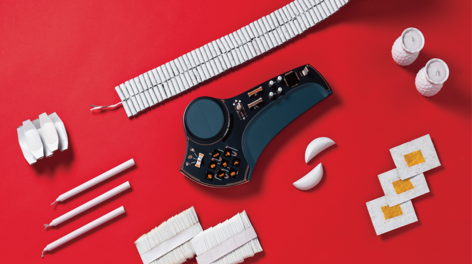
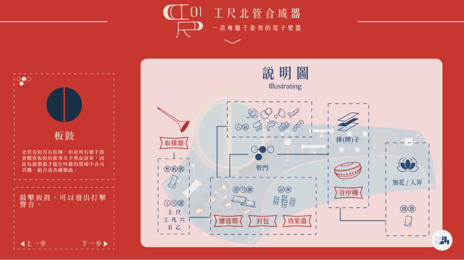
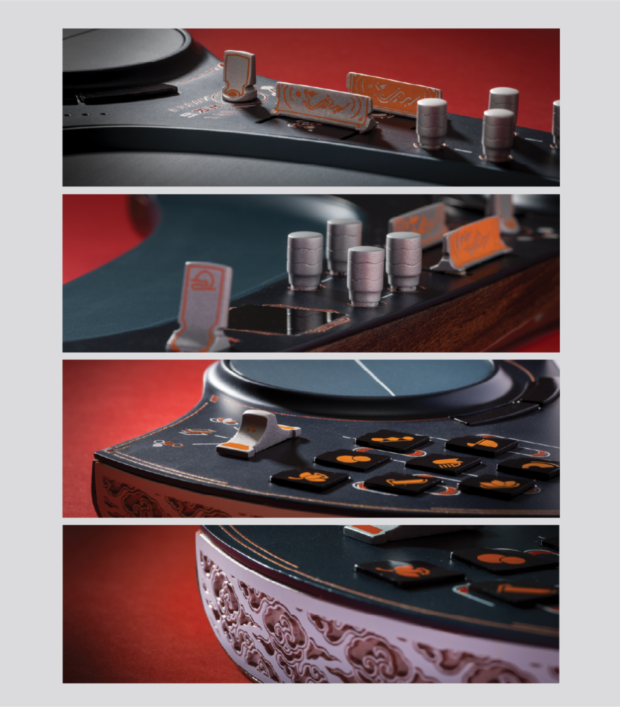

工尺 - 北管樂混音器操作展示網站
專案背景


此為台灣科技大學畢業生 - 設計系工業設計組王駿騰、 陳錡淵的畢業製作作品之展示網站。該作品將台灣民俗文化之一：北管樂的音色、樂器等元素與西方音樂常見的混音器結合，創造出北管樂混音器「工尺」。
成果展示
因本網站專為觸控式螢幕做設計，且為保持使用者良好的體驗，僅以 1366*768 做設計，以避操作操作區過小造成使用者操作上的不便。 若以電腦操作，請以 chrome 開發者工具中模擬觸控模式進行操作。


設計系統架構規劃與整理